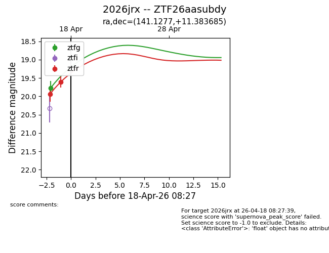
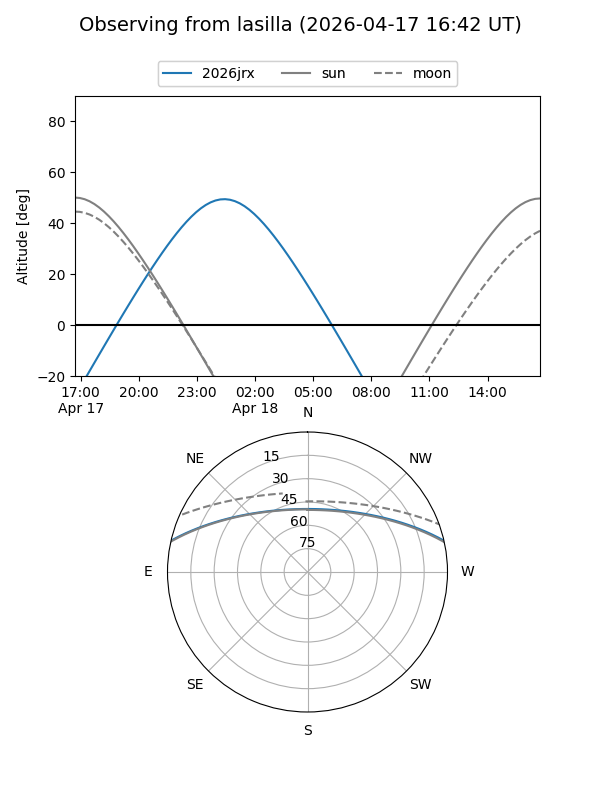
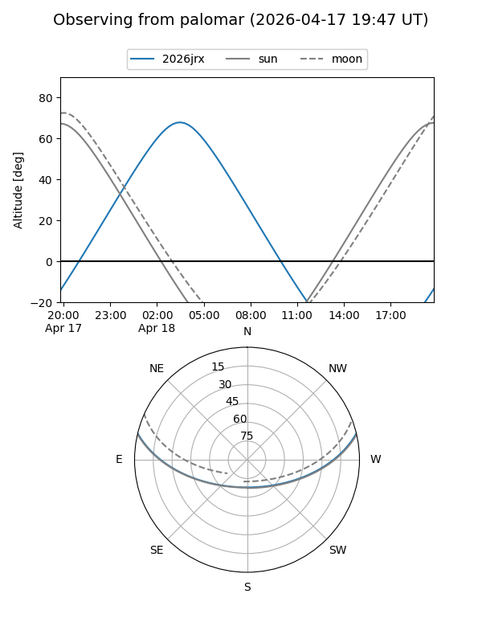
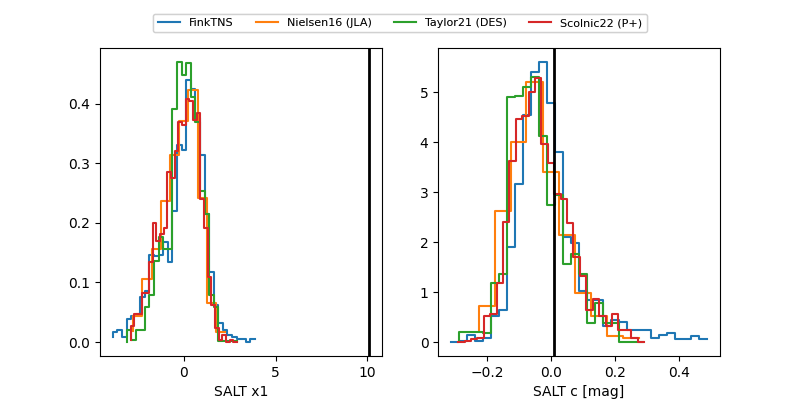

2026jrx
Target 2026jrx at 2026-04-18 08:33
Aliases and brokers:
FINK: link
Lasair: link
ALeRCE: link
TNS: link
YSE: link
alt names
ZTF26aasubdy (ztf,fink_ztf)
2026jrx (tns,yse)
Coordinates:
equatorial (ra, dec) = 141.1277,+11.38368
equatorial (HMS+DMS) = 09:24:30.64,+11:23:01.26
galactic (l, b) = (220.4217,+39.07709)
Flags:
Photometry:
last ztfg=19.78, ztfr=19.61
1 ztfg, 2 ztfr detections
Lightcurve

Visibility


Additional plots
